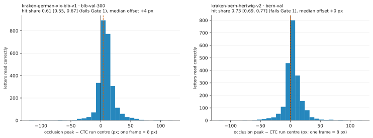
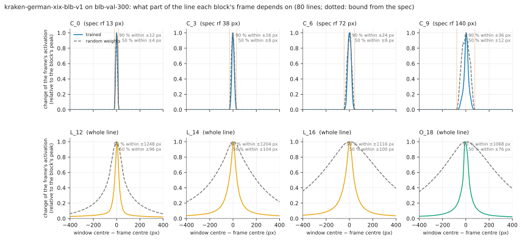

Atlas explorer: move along a line and see every block, the output, and the results of L1-L3 with their controls.
Epic thodel/weightspace#13. Rule and readings: docs/ATLAS_REPORT.md. The images of the six viewer lines per model are in
img/; they are practice lines, not held-out data.
| model | practice set | lines | hit share [page-clustered 95 %] | median offset | Gate 1 |
|---|---|---|---|---|---|
| kraken-german-xix-blb-v1 | blb-val-300 | 80 | 0.61 [0.55, 0.67] | +4 px | fails |
| kraken-bern-hertwig-v2 | bern-val | 80 | 0.73 [0.69, 0.77] | +0 px | fails |

